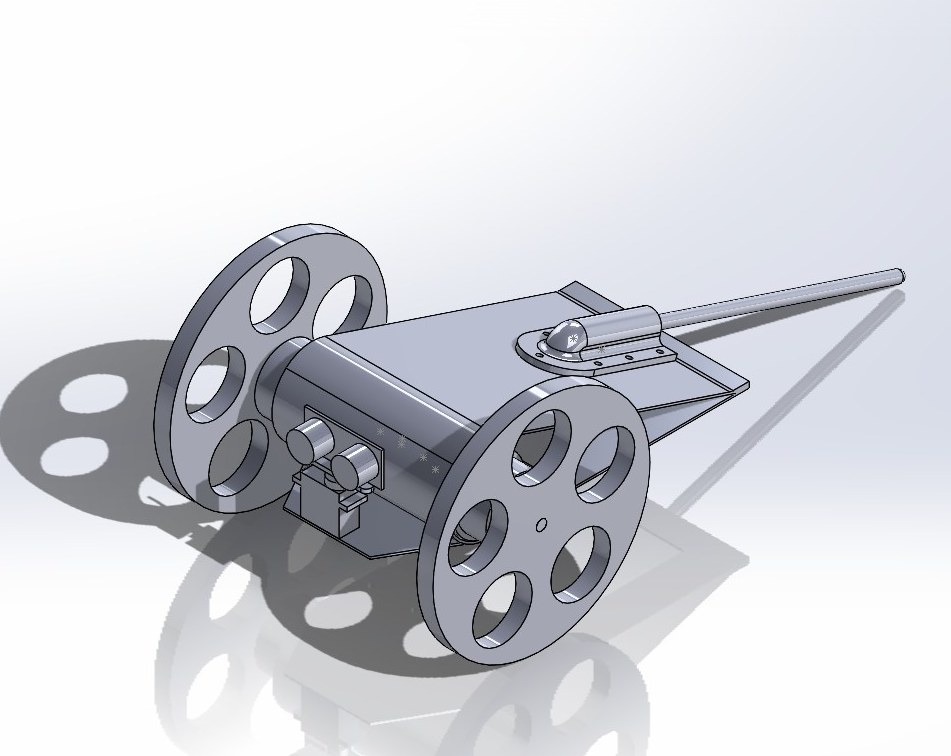

Integration II class Website for our Rover
Welcome to page 1 of this website. This group will track the progress of this team's rover for Integration II (Dr. Bevill). The students in this project are Bryson Cranmer, Evan Trembley, William Mcglochlin, and Vicente Valadez.
About This Project
Our team is designing and building an autonomous rover capable of navigating real-world terrain, avoiding obstacles, and accurately traveling to GPS-defined locations while carrying and delivering a payload. The rover is being developed through an iterative engineering design process that includes defining product requirements, establishing measurable engineering specifications, generating and evaluating concepts, performing technical calculations, and refining our design through testing and documentation.
The project integrates mechanical design, electrical systems, and embedded programming using an Arduino Mega 2560 as the primary controller. Key subsystems include DC gear motors with motor drivers, ultrasonic sensing for obstacle detection, GPS navigation, a magnetometer for directional heading, and wireless communication via an RF module. Through this project, our team is applying classroom engineering principles to a functional, real-world robotic system while documenting our progress through this website.
Our team consists of engineering students collaborating across mechanical, electrical, and software disciplines to design and build a fully functional autonomous rover. Each team member contributes to different aspects of the project, including system design, programming, CAD modeling, testing, documentation, and project management.
We work together using structured engineering methods such as Work Breakdown Structures, decision matrices, and iterative prototyping to guide our design process. Regular weekly meetings allow us to assign tasks, track progress, troubleshoot challenges, and refine our approach. By combining technical skills, creativity, and teamwork, we are developing a rover that meets our mission objectives while strengthening our engineering problem-solving abilities.
Major Design Project: Autonomous Rover
Create an autonomous rover capable of navigating to specified GPS coordinates and delivering a payload. For our missions the payload will be modeled as a cubic wooden block ~1.5”x1.5”x1.5”. The rover should be capable of obstacle avoidance, navigating rough/uneven/sandy terrain, and meeting speed and navigation accuracy requirements.

1. Rolling Chassis (two consecutive successful runs)
- a. Drive in a ~10ft square pattern, stop at original location and deliver payload within 3ft, in 60 seconds.
-
b. Drive straight for 15–30ft and place a marker. Must be within ±10% of the target distance in under 30 seconds.
- The distance is sent as a 12-character message like “X15ZZZZZZZZZ”.
- The message is transmitted every 5 seconds.
2. Obstacle Avoidance (no GPS)
- a. Navigate a 6’x6’ enclosed area for 60 seconds without hitting obstacles.
- b. Drive to a waypoint 30’ ahead, avoid one obstacle, and deliver payload within 5ft in under 120 seconds.
3. Basic GPS Navigation
Point due North within ±20° and complete within 180 seconds. Deliver payload to finish.
Full credit requires completion on rough or sandy terrain.
4. Advanced GPS Navigation
- a. Navigate to a hardcoded GPS waypoint and deliver payload within 15 feet.
-
b. Read GPS from RF beacon, place a marker within 15 feet, and return to start.
- Coordinates are sent as a 12-character message like: “N09495W58784”.
- Coordinates are transmitted every 5 seconds.
Full credit requires completion on rough or sandy terrain.
Other Rover Requirements
- Max weight: 2.5 lbs including payload
- Robustness: Must survive an 18” drop
- Weather resistance: Must pass “sprinkler test”
- Original design: Preference for team-built designs